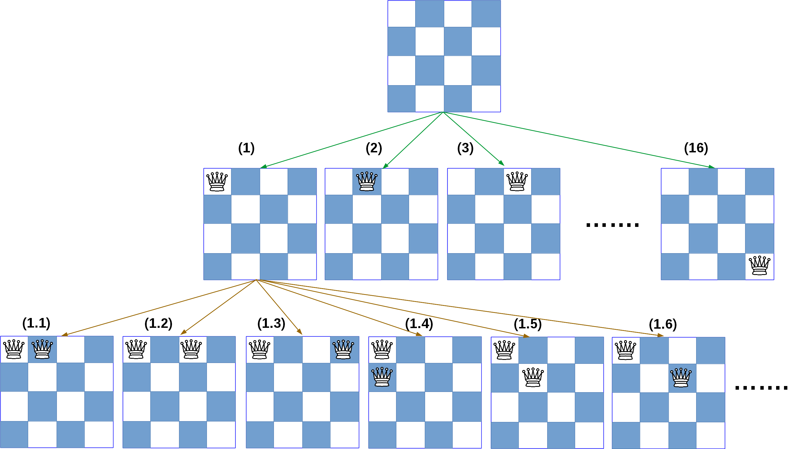
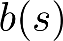
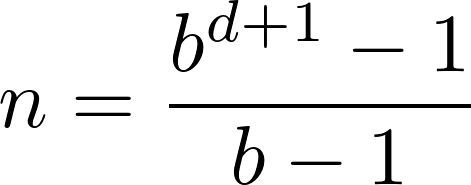
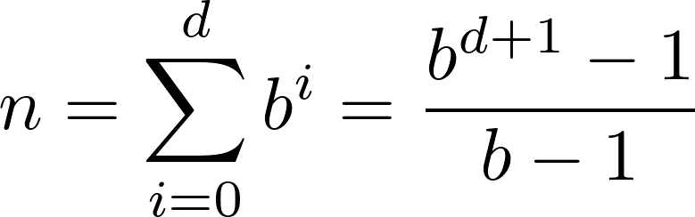
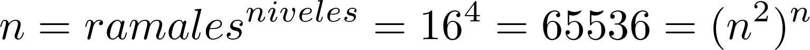
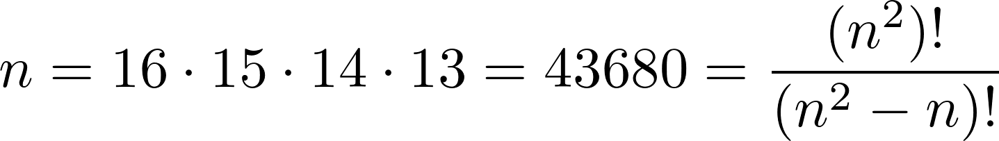
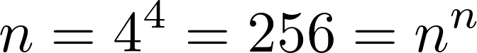
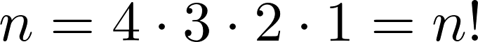

Los algoritmos de búsqueda son aquellos que se encargan de resolver problemas de búsqueda (valga la redundancia). Para ello, este tipo de algoritmos deben recuperar información almacenada en una estructura que se conoce como espacio de búsqueda que pertenece a un dominio del problema. Estas estructuras pueden ser representadas a través de listas ligadas, árboles de búsqueda o arreglos (Ertel, 2017).
Para ilustrar este caso, vamos a representar a continuación el espacio de búsqueda del problema de colocar N reinas en un tablero de ajedrez de N casilleros de lado (total de casilleros = N x N), sin que las reinas se pongan en jaque una otra.

Como apreciar en la figura anterior, tenemos la representación del problema de ubicar 4 reinas en un tablero de ajedrez de 4 casilleros por lado (total de casilleros = 16).
Algunos importantes aspectos a considerar son los siguientes:
- La información está representada a través de un árbol.
- En la raíz se puede observar el estado inicial (So)
- A medida que vamos colocando las reinas, se van generando ramas del árbol que constituyen caminos que podemos seguir, hasta encontrar aquél camino que nos lleve a la solución.
Para este problema y en base a los criterios que se definieron en la sección "Búsquedas", tendríamos los siguientes valores para el problema de búsqueda:
- Estado: matriz de 4 filas por 4 columnas que pueden tener un indicador que especifica si la reina ocupa un casillero dado por una fila y una columna específica. Los demás casilleros se consideran libres.
- Estado inicial: para este problema partimos del casillero en blanco, es decir, donde aún no se ha colocado ninguna reina.
- Estado objetivo: aquel estado en el que están colocadas las 4 reinas sin ponerse en jaque la una a la otra.
- Acciones: colocar una reina en un casillero específico.
- Función de coste: función constante 1, ya que todas las acciones tienen igual coste (para otros problemas será distinto).
Factor de ramificación
El factor de ramificación es el número de estados sucesores de un estado s dado y se presenta como sigue:

El factor de ramificación efectivo de un árbol de profundidad d con un total de n nodos, se define como el factor de ramificación de un árbol con un factor constante de ramificación, igual profundidad, e igual n. Un algoritmo de búsqueda se dice que es completo si encuentra una solución en cualquier problema resoluble. Si el algoritmo de búsqueda completo termina sin encontrar una solución, el problema no se puede resolver(Ertel, 2017).
Para una profundidad d dada con un total de nodos n, el factor de ramificación puede ser calculado resolviendo la siguiente ecuación (Ertel, 2017):

Esto se debe a que un árbol con un factor constante de ramificación y una profundidad d, tiene un total de nodos (Ertel, 2017):

Analizando el problema de las N reinas
A fin de determinar cuántos estados tiene el problema de ubicar N reinas en un tablero de N filas y N columnas, trabajaremos con el valor de N = 4.
A continuación vamos a analizar cuántos estados se generan si intentamos colocar las reinas bajo distintos criterios:
- Si colocamos la reina en cualquier casillero sin realizar ninguna validación, es decir sin importar si el casillero ya está ocupado por otra reina, tendremos lo siguiente (donde n representa el número de estados):

- Si colocamos la reina en cualquier casillero, respetando aquellos casilleros que ya estén ocupados por otras reina, tendremos lo siguiente (donde n representa el número de estados):

- Si a más del criterio anterior, colocamos las reinas en una columna distinta siempre, tenemos lo siguiente:

- Finalmente si colocamos las reinas en una fila y una columna distinta siempre se tiene lo que se señala a continuación:
